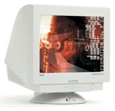
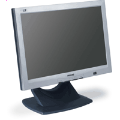

| Monitorart |
Vorteile |
Nachteile |
| CRT-Monitor |
|
|
|  |
gro�es Kontrastverh�ltnis, gro�e Lichtst�rke, hohe Reaktionsgeshwindikeit |
hoher Energieverbrauch, gro�e geh�useabmessungen, gew�lbter Bildschirm |
| LCD-Monitor |
|
|
|  |
geringer Energieverbrauch, geringer Platzbedarf, flacher Bildschirm |
nidrige Reaktionsgeschwindikeit, eingeschr�nkter Betrachtwinkel, geringe Lichtst�rke |
| Plasma-Monitor |
|
|
 |
gro�e lichtst�rke, geringer Platzbedarf, flacher Bildschirm, gro�e Bildschirmdiagonalen m�glich |
hoher Energeiverbrauch, niedrige Reaktionsgeschwindikeit |
| Webseite der TAI11 -Berufsfachschule f�r technische Assistenten / Hof |
Autor © Max Mustermann |